What is talend4sw ?
Talend4SW is a project that aims to offer Talend components to produce and consume RDF from the Semantic web.
The available components are classified in three categories :

Virtuoso Triplestore components
Components to make operations on Virtuoso triplestore using Talend. Connect to a Virtuoso triplestore, submit sparql query, insert data, clear graph...

Jena components
Components to easily create and make operations (insert, select, construct queries) on Jena model using Talend.

Semantic data components
Components that aim to make Talend more user friendly to transform RDF data.
Virtuoso Triplestore components
The goal of these components is to easily make operations on Virtuoso triplestores using Talend. These components will allow the user to connect to a Virtuoso triplestore, submit sparql query, insert data, clear graph...
tVirtuosoConnection
The user uses this component to connect to a Virtuoso triplestore by informing the host, the port, the username and the password.
This connection is then used by the other Virtuoso components to make operations on the triplestore.
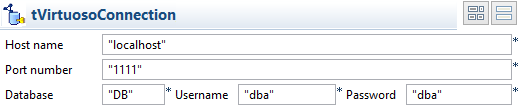
tVirtuosoSelect
Submit a SPARQL select query to a Virtuoso triplestore (tVirtuosoConnection). One output row per result and the different selected variables are sorted in columns in the row.
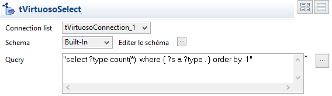
tVirtuosoConstruct
Submit a sparql construct query to a tVirtuosoConnection.
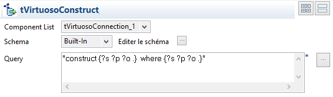
tVirtuosoInsert
Insert statements into a graph stored in a Virtuoso triplestore (defined by a tVirtuosoConnection).
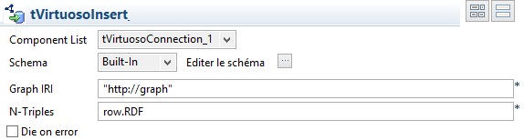
tVirtuosoClearGraph
Clear a graph in a Virtuoso triplestore (defined by a tVirtuosoConnection)
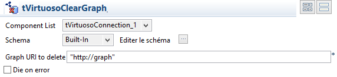
Jena components
The goal of these components is to easily create and make operations on Jena model using Talend. These components will allow the user to create a Jena model, to add statements and to query it.
You can upload the Jena demonstration job to have an idea of the components role.
tJenaCreateModel
Create an empty Jena model (a set of RDF statements). That will be manipulate by the other Jena components.
tJenaReadFile
Fill a model (created using tJenaCreateModel) with statements from a file (RDF/XML, n-triple or turtle format).
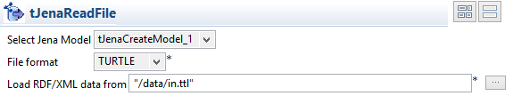
tJenaReadRow
Fill a model with statements from an incoming row (RDF/XML, n-triple or turtle format).
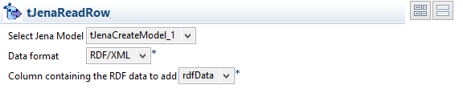
tJenaSelectQuery
Submit a SPARQL select query to the Jena model using ARQ query engine. One output row per result and the different selected variables are sorted in columns in the row.
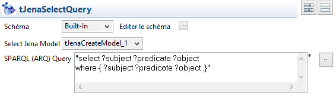
tJenaConstructQuery
Submit a SPARQL construct query to the Jena model using ARQ query engine. The whole result is given as a RDF document in the first columnof the output row. The user can choose the output format (RDF/XML, n-triple or turtle).
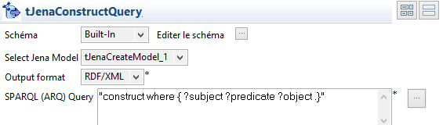
tJenaDropModel
Clear a model from any statements.
Semantic data components
Those components aimed to make Talend more user friendly to transform RDF data.
tRDF2RDF
Convert data from a RDF format to another RDF format. The format available are RDF/XML, n-triple and Turtle. This component use the Jena library.
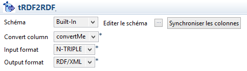
tTriple2Ntriple
Convert a 4 columns row (subject, predicate, object, type) into a well formed n-triple. It also replaces common prefixes and the user can add prefixes to be replaced during the transformation.
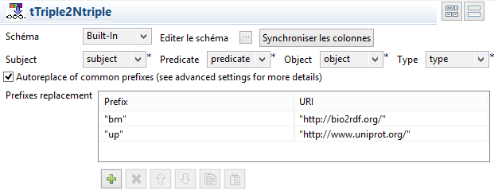